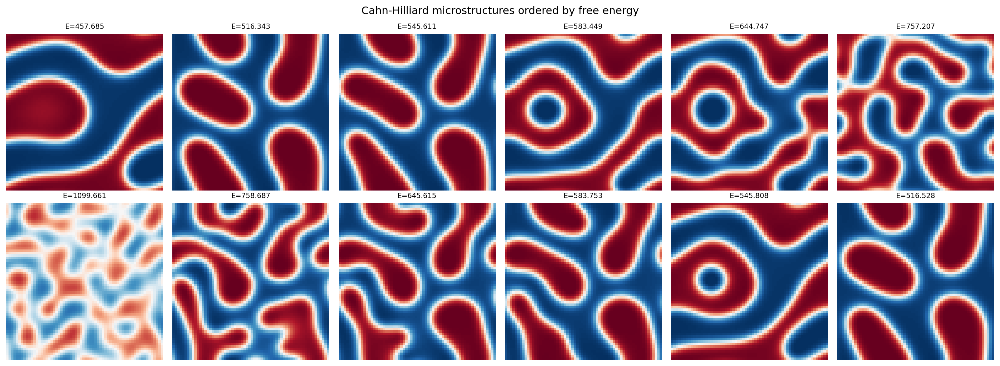
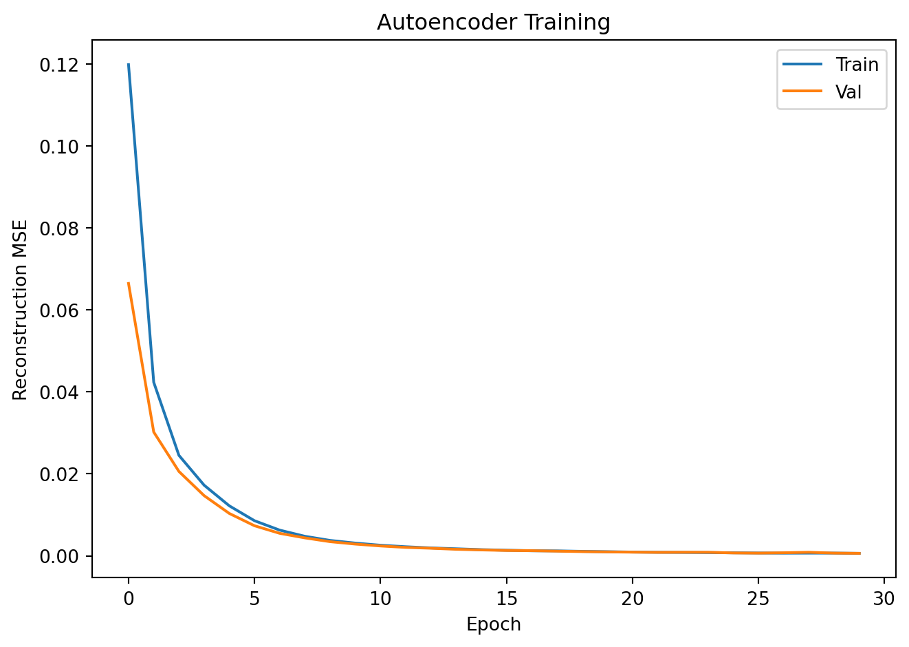
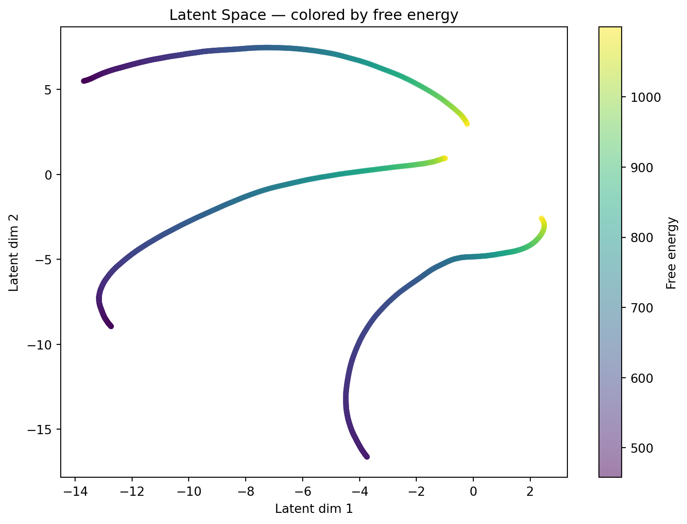
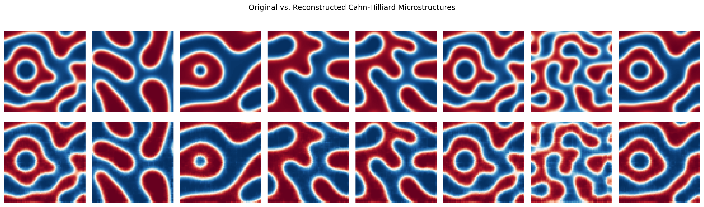
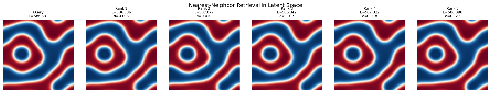

!pip install git+https://github.com/ECLIPSE-Lab/Ai4MatLectures.git "mdsdata>=0.1.5"MG Week 11: Latent Space as Materials Genome Coordinate
Energy-ordered representations with CahnHilliardDataset

Learning Objectives
- Use a continuous physical quantity (energy) to interpret latent space structure
- Discover whether autoencoders preserve thermodynamic ordering
- Apply nearest-neighbor retrieval in latent space
Setup
import torch
import torch.nn as nn
from torch.utils.data import DataLoader, random_split
from ai4mat.datasets import CahnHilliardDataset
import matplotlib.pyplot as plt
import numpy as np1. Load the Data
# Use three simulations for training diversity
dataset = CahnHilliardDataset(simulation_number=[0, 1, 2])
print(f"Dataset size: {len(dataset)}")
x0, y0 = dataset[0]
print(f"Sample x shape: {x0.shape} (1, 64, 64)")
print(f"Sample y (energy): {y0:.4f} (free energy of microstructure)")
energies_all = torch.tensor([dataset[i][1].item() for i in range(len(dataset))]).numpy()
print(f"\nEnergy range: [{energies_all.min():.4f}, {energies_all.max():.4f}]")
print(f"Energy mean: {energies_all.mean():.4f} ± {energies_all.std():.4f}") 0%| | 0/3 [00:00<?, ?it/s] 33%|███▎ | 1/3 [00:00<00:00, 2.40it/s] 67%|██████▋ | 2/3 [00:01<00:00, 1.82it/s]100%|██████████| 3/3 [00:01<00:00, 1.65it/s] Dataset size: 2975
Sample x shape: torch.Size([1, 64, 64]) (1, 64, 64)
Sample y (energy): 586.8312 (free energy of microstructure)
Energy range: [457.6855, 1099.6606]
Energy mean: 629.7600 ± 136.7265# Visualize microstructures sorted by energy
idx_sorted = np.argsort(energies_all)
fig, axes = plt.subplots(2, 6, figsize=(16, 6))
# Low-energy samples (more phase-separated)
for i, ax in enumerate(axes[0]):
idx = idx_sorted[i * (len(idx_sorted) // 6)]
ax.imshow(dataset[idx][0].squeeze().numpy(), cmap='RdBu_r', vmin=0, vmax=1)
ax.set_title(f"E={dataset[idx][1]:.3f}", fontsize=8)
ax.axis('off')
axes[0, 0].set_ylabel("Low energy\n(phase-separated)", fontsize=8)
# High-energy samples (more mixed)
for i, ax in enumerate(axes[1]):
idx = idx_sorted[-(i * (len(idx_sorted) // 6)) - 1]
ax.imshow(dataset[idx][0].squeeze().numpy(), cmap='RdBu_r', vmin=0, vmax=1)
ax.set_title(f"E={dataset[idx][1]:.3f}", fontsize=8)
ax.axis('off')
axes[1, 0].set_ylabel("High energy\n(mixed/disordered)", fontsize=8)
plt.suptitle("Cahn-Hilliard microstructures ordered by free energy")
plt.tight_layout()
plt.show()
2. Train/Val Split
n_train = int(0.8 * len(dataset))
n_val = len(dataset) - n_train
train_ds, val_ds = random_split(dataset, [n_train, n_val])
train_loader = DataLoader(train_ds, batch_size=32, shuffle=True)
val_loader = DataLoader(val_ds, batch_size=32, shuffle=False)
print(f"Train: {n_train} | Val: {n_val}")Train: 2380 | Val: 5953. Define the Autoencoder
class ConvAutoencoder(nn.Module):
def __init__(self, latent_dim=2):
super().__init__()
self.encoder = nn.Sequential(
nn.Conv2d(1, 16, 3, stride=2, padding=1), # 32x32
nn.ReLU(),
nn.Conv2d(16, 32, 3, stride=2, padding=1), # 16x16
nn.ReLU(),
nn.Flatten(),
nn.Linear(32 * 16 * 16, latent_dim)
)
self.decoder = nn.Sequential(
nn.Linear(latent_dim, 32 * 16 * 16),
nn.ReLU(),
nn.Unflatten(1, (32, 16, 16)),
nn.ConvTranspose2d(32, 16, 3, stride=2, padding=1, output_padding=1), # 32x32
nn.ReLU(),
nn.ConvTranspose2d(16, 1, 3, stride=2, padding=1, output_padding=1), # 64x64
nn.Sigmoid()
)
def forward(self, x):
z = self.encoder(x)
return self.decoder(z), z
model = ConvAutoencoder(latent_dim=2)
n_params = sum(p.numel() for p in model.parameters())
print(f"Autoencoder parameters: {n_params:,}")Autoencoder parameters: 50,5314. Training Loop
criterion = nn.MSELoss()
optimizer = torch.optim.Adam(model.parameters(), lr=1e-3)
train_losses, val_losses = [], []
for epoch in range(30):
model.train()
ep_loss = 0.0
for x_batch, _ in train_loader:
optimizer.zero_grad()
x_recon, _ = model(x_batch)
loss = criterion(x_recon, x_batch)
loss.backward()
optimizer.step()
ep_loss += loss.item() * len(x_batch)
train_losses.append(ep_loss / n_train)
model.eval()
v_loss = 0.0
with torch.no_grad():
for x_batch, _ in val_loader:
x_recon, _ = model(x_batch)
v_loss += criterion(x_recon, x_batch).item() * len(x_batch)
val_losses.append(v_loss / n_val)
if (epoch + 1) % 10 == 0:
print(f"Epoch {epoch+1:3d} | Train MSE: {train_losses[-1]:.5f} | Val MSE: {val_losses[-1]:.5f}")
plt.plot(train_losses, label='Train'); plt.plot(val_losses, label='Val')
plt.xlabel("Epoch"); plt.ylabel("Reconstruction MSE")
plt.title("Autoencoder Training"); plt.legend()
plt.tight_layout(); plt.show()Epoch 10 | Train MSE: 0.00311 | Val MSE: 0.00287
Epoch 20 | Train MSE: 0.00101 | Val MSE: 0.00095
Epoch 30 | Train MSE: 0.00060 | Val MSE: 0.00061
5. Latent Space Colored by Energy
all_z, all_energies = [], []
model.eval()
full_loader = DataLoader(dataset, batch_size=64, shuffle=False)
with torch.no_grad():
for x_batch, y_batch in full_loader:
_, z = model(x_batch)
all_z.append(z.numpy())
all_energies.append(y_batch.numpy())
all_z = np.concatenate(all_z, axis=0)
all_energies = np.concatenate(all_energies, axis=0)
fig, ax = plt.subplots(figsize=(8, 6))
sc = ax.scatter(all_z[:, 0], all_z[:, 1], c=all_energies,
cmap='viridis', alpha=0.5, s=12)
plt.colorbar(sc, ax=ax, label="Free energy")
ax.set_xlabel("Latent dim 1")
ax.set_ylabel("Latent dim 2")
ax.set_title("Latent Space — colored by free energy")
plt.tight_layout()
plt.show()
# Check if energy ordering is preserved in latent space
# Compute Spearman correlation between latent coords and energy
from scipy.stats import spearmanr
r1, p1 = spearmanr(all_z[:, 0], all_energies)
r2, p2 = spearmanr(all_z[:, 1], all_energies)
print(f"Spearman correlation: latent dim 1 vs energy: r={r1:.3f} (p={p1:.2e})")
print(f"Spearman correlation: latent dim 2 vs energy: r={r2:.3f} (p={p2:.2e})")
print()
if max(abs(r1), abs(r2)) > 0.5:
print("Strong correlation: the latent space has organized microstructures")
print("by their thermodynamic energy — a physically meaningful coordinate!")
else:
print("Weak correlation: the latent dims may encode other structural features.")
print("Try rerunning or increasing training epochs.")Spearman correlation: latent dim 1 vs energy: r=0.665 (p=0.00e+00)
Spearman correlation: latent dim 2 vs energy: r=0.392 (p=1.35e-109)
Strong correlation: the latent space has organized microstructures
by their thermodynamic energy — a physically meaningful coordinate!6. Reconstruction Quality
fig, axes = plt.subplots(2, 8, figsize=(16, 5))
x_show = torch.stack([val_ds[i][0] for i in range(8)])
with torch.no_grad():
x_recon, _ = model(x_show)
for i in range(8):
axes[0, i].imshow(x_show[i].squeeze().numpy(), cmap='RdBu_r', vmin=0, vmax=1)
axes[1, i].imshow(x_recon[i].squeeze().numpy(), cmap='RdBu_r', vmin=0, vmax=1)
axes[0, i].axis('off'); axes[1, i].axis('off')
axes[0, 0].set_ylabel("Original", fontsize=9)
axes[1, 0].set_ylabel("Reconstructed", fontsize=9)
plt.suptitle("Original vs. Reconstructed Cahn-Hilliard Microstructures")
plt.tight_layout(); plt.show()
7. Nearest-Neighbor Retrieval in Latent Space
# Given a query microstructure, find the 5 most similar ones by latent distance
query_idx = 0
query_z = all_z[query_idx:query_idx+1] # (1, 2)
distances = np.linalg.norm(all_z - query_z, axis=1)
top5_idx = np.argsort(distances)[1:6] # skip self (idx 0)
fig, axes = plt.subplots(1, 6, figsize=(16, 3))
axes[0].imshow(dataset[query_idx][0].squeeze().numpy(), cmap='RdBu_r', vmin=0, vmax=1)
axes[0].set_title(f"Query\nE={dataset[query_idx][1]:.3f}", fontsize=8)
axes[0].axis('off')
for col, idx in enumerate(top5_idx, 1):
axes[col].imshow(dataset[idx][0].squeeze().numpy(), cmap='RdBu_r', vmin=0, vmax=1)
axes[col].set_title(f"Rank {col}\nE={dataset[idx][1]:.3f}\nd={distances[idx]:.3f}", fontsize=8)
axes[col].axis('off')
plt.suptitle("Nearest-Neighbor Retrieval in Latent Space")
plt.tight_layout()
plt.show()
Exercises
- Does the latent space preserve energy ordering? The Spearman correlation above quantifies this. Try training longer or with a larger
latent_dim— does the correlation improve? - Try
simulation_number=-1(all 18 simulations). How does the latent space look when trained on all data? Does the energy gradient in the scatter plot become clearer or more diffuse? - For the nearest-neighbor retrieval: do the 5 nearest neighbors have similar energies to the query? Compute the mean absolute energy difference between query and its 5 neighbors — how does this compare to the global energy standard deviation?